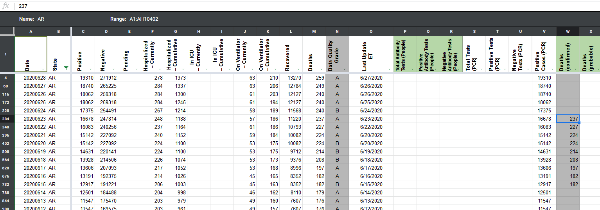
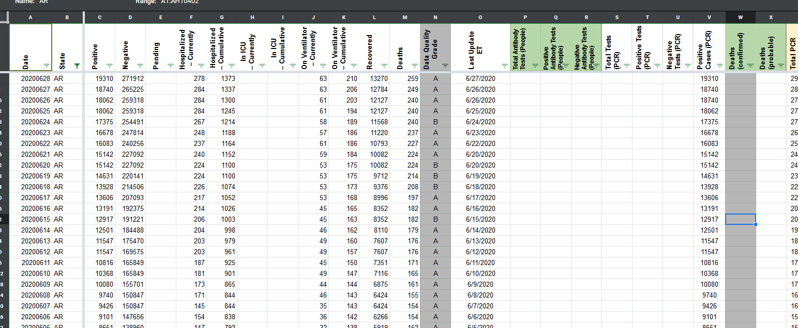
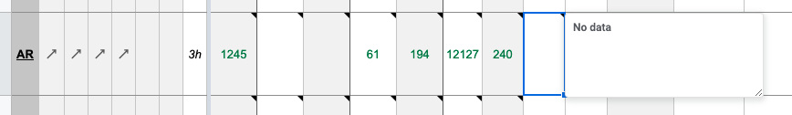

[AR] PCL Historicals and WS2
Death values are historically recorded in both the “Deaths” and “Deaths (Confirmed)” columns for AR for only 6/15 - 6/23. However, AR’s death values are unclear about what they represent, so they should only be recorded in the main “Deaths” field.
Comments
muamichali commented on June 28, 2020 at 6:52 pm
Deleting values from Confirmed Deaths column that were captured 6/15-6/23
BEFORE 
AFTER 
Added tooltip to the Confirmed-deaths cell and also added note in Process-notes.
